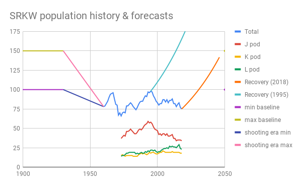
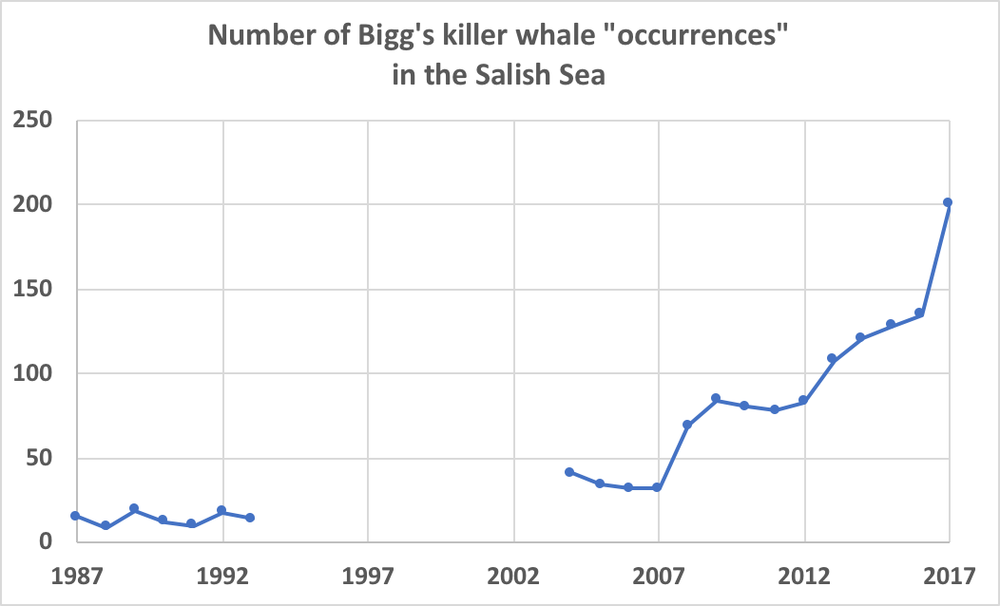

Harbor seal and forage fish, east Strait of Juan de Fuca, 6/26/2011
Which species are highest priority for you?
Furthest along with long-term monitoring time series: SRKWs, Bigg's, harbor porpoise, and harbor seal...With inspiration from Marine Waters longer-term time-series!
PDO+NPDO (1950); herring spawning biomass (1973); bird metrics (1974); larval fish density (2000).
Data sources -- 1973-present from Ken Balcomb, Center for Whale Research; 1960-1972 from Olesiuk et al., 1990; baselines and forecasts from NOAA recovery plan
With inspiration from Marine Waters longer-term time-series!
PDO+NPDO (1950); herring spawning biomass (1973); bird metrics (1974); larval fish density (2000).

Data sources -- 1973-present from Ken Balcomb, Center for Whale Research; 1960-1972 from Olesiuk et al., 1990; baselines and forecasts from NOAA recovery plan
Data source: Ken Balcomb, Center for Whale Research
Draft SRKW entry for 2018 Marine Waters report
Long-term trends: increasing annual occurence; seasonal peak in August ~1990; bimodal peak in Apr-May and Aug-Sep
Data sources: 1987-1993 (Baird and Dill, 1995); 2004-2010 (Houghton et al., 2015); 2011-2017 (Shields et al., 2018).
Draft Bigg's "species brief" for the Encyclopedia of Puget Sound (EoPS) (Monika Wieland, lead MMWG author)
Winter density of harbor porpoise and Dall’s porpoise during 1995-2015 by region.
Data source: aerial surveys by Evenson et al., 2016
Draft harbor porpoise species brief for the EoPS (Cindy Elliser, lead MMWG author)
Estimated haulout counts of three WA inland stocks 1978-2015.
Data source: 12/14/2018 WDFW Commission presentation by Pamplin, Anderson, and Pearson
(Carrying capacity earlier ~1995 in Strait of Georgia 1974-2009.)
Notes for harbor seal species brief for the EoPS
/